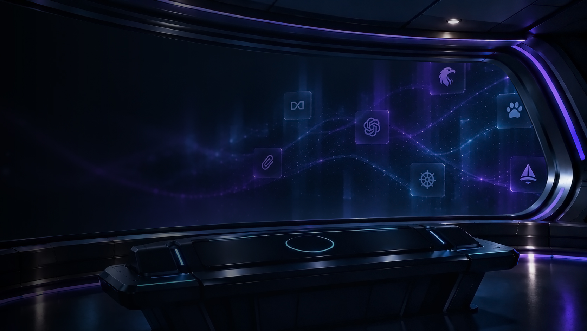

Chat
Nutze Chat-Anwendungen wie AnythingLLM.
AnythingLLM
Magic Stick. Deine eigene KI-Appliance.
Magic Stick bringt KI-Modelle, Anwendungen und zentrale Anmeldung auf deiner Infrastruktur zusammen.
Verwalte deine KI-Umgebung über eine Oberfläche – auf eigener Hardware, in einer Cloud-Umgebung oder in einem bestehenden Kubernetes-Cluster.
Infrastruktur und Betrieb bleiben in deiner Verantwortung. Magic Stick führt die Verwaltung zusammen.
Software für deine eigene Infrastruktur. Source-available · BSL 1.1
Ein Ort für deine KI
Modelle sind nur ein Teil einer nutzbaren KI-Umgebung. Anwendungen, Zugriffe und der tägliche Betrieb müssen ebenfalls zusammenspielen.
Magic Stick bringt diese Elemente in einem gemeinsamen Dashboard zusammen. Module aktivieren, Modelle anbinden, Anwendungsinstanzen anlegen und Benutzer verwalten.
Produktoberfläche · Testsystem, 24.09.2026 · Beispielwerte, keine Größenempfehlung
Anwendungen aus dem Katalog
Nutze Chat-Anwendungen wie AnythingLLM.
AnythingLLMErkunde Agenten-Anwendungen und koordiniere ihre Arbeit.
Hermes · OpenClaw · PaperclipHole Coding-Workflows in deine KI-Umgebung.
KubeOpenCodeDein nächster Schritt
Lerne, wie eine KI-Umgebung zusammenspielt, und probiere Anwendungen auf Infrastruktur aus, die du verwaltest.
Voraussetzungen prüfenBereite eine gemeinsame KI-Umgebung vor – mit klarem Anwendungsfall, definierter Nutzergruppe und einer verantwortlichen Person für den Betrieb.
Team-Pilot planenDeine Infrastruktur
Magic Stick unterstützt mehrere Betriebsumgebungen. Wähle den Weg, der zu der Infrastruktur passt, die du bereits hast oder bereitstellen willst.
Starte mit einem bootfähigen Ubuntu-Image auf einem eigenen Rechner.
Richte eine neue virtuelle Maschine mit cloud-init ein.
Nutze eine vorhandene virtuelle Ubuntu-Maschine als Basis deiner Plattform.
Ergänze Magic Stick in einem Cluster, den du bereits betreibst.
Die Basisplattform benötigt keine GPU. Du kannst kleine Modelle auf einer unterstützten CPU betreiben, externe Modelldienste anbinden und lokale GPU-Modelle ergänzen, sobald geeignete Hardware und Module vorhanden sind.
Bei externen Modelldiensten können Anfragen außerhalb deiner eigenen Infrastruktur verarbeitet werden.
Hardware-Kompatibilität prüfen (EN)DokumentationHardware- und Netzwerkvoraussetzungen (EN)Installationsübersicht (EN)
Loslegen
Wähle deinen Installationsweg und prüfe die Voraussetzungen für deine Hardware oder virtuelle Umgebung.
Konfiguriere im Dashboard eine Modellquelle und richte die Anwendung ein, die du ausprobieren möchtest.
Öffne deine Anwendung und teste eine konkrete Aufgabe. Entscheide anhand des Ergebnisses, was du als Nächstes konfigurierst.
Installation und Downloads benötigen Internetzugriff. Die Ersteinrichtung gehört in ein vertrauenswürdiges privates Netz. Sichere vorhandene Daten vor der Installation.
Für deine Organisation
Bringe dein IT-Team, die künftigen Nutzerinnen und Nutzer und einen konkreten Anwendungsfall zusammen. Lege fest, was du lernen willst, bevor du den Einsatz ausweitest.
Team-Einsatz besprechenWähle Aufgabe, Nutzergruppe und Betriebsumgebung.
Einigt euch auf Infrastruktur, Modellquellen, Zugriffe und Verantwortlichkeiten im Betrieb.
Prüft Qualität, Geschwindigkeit, Kosten und Akzeptanz gegen die Ziele eures Piloten.
Du planst, Magic Stick mit mehreren Personen zu nutzen? Melde dich, um dein Setup zu besprechen und die geltenden Lizenzbedingungen zu klären.
Magic Stick ist source-available unter BSL 1.1. Kernfunktionen benötigen keine Lizenzdatei; nur föderiertes SSO erfordert eine Aktivierung. Lizenzen verstehen
Gut zu wissen
Deine Plattform. Informierte Entscheidungen.
Nicht für die Basisplattform. Du kannst kleine Modelle auf einer unterstützten CPU betreiben oder externe Modelldienste anbinden. Lokale GPU-Modelle benötigen geeignete Hardware und die passende Konfiguration. Siehe die Kompatibilitätsübersicht (EN).
Magic Stick kann externe Modell-Endpunkte über LiteLLM anbinden und lokale Modelle über KubeAI mit Ollama oder vLLM oder direkt mit FreeToken betreiben. Die Modellquelle hängt von deinem Setup ab.
Nicht automatisch. Wenn du externe Modelldienste anbindest, können Anfragen deine Infrastruktur verlassen. Die Datenflüsse hängen von den Anwendungen, Modellquellen und der Konfiguration ab, die du wählst. Auch Installation und Downloads greifen auf externe Quellen zu.
Du oder deine Organisation bleibt für Infrastruktur und Betrieb verantwortlich. Dein IT-Team oder ein externer Dienstleister kann dich dabei unterstützen.
Magic Stick nutzt Keycloak und Envoy Gateway für die zentrale Anmeldung am Dashboard und an entsprechend konfigurierten Anwendungsrouten. Anwendungsspezifische Berechtigungen bleiben in den Anwendungen.
Installation und laufender Betrieb brauchen technische Verantwortung. Die genauen Anforderungen hängen von deinem Installationsweg ab. Wenn du einen Team-Einsatz planst, binde dein IT-Team oder deinen Dienstleister früh ein.
Kubernetes mit Flux hält die Plattform konfiguriert. Der Magic Stick Operator richtet Modell-Engines nach deinen Dashboard-Einstellungen ein, und LiteLLM gibt Anwendungen eine gemeinsame Modell-API. Details in der Architekturübersicht (EN).
Beginne mit den Anleitungen zur Fehlerbehebung (EN) und der Support-Richtlinie (EN). Projektunterstützung erfolgt nach Möglichkeit, ohne garantierte Antwortzeit. Zugangsdaten und private Installationsinformationen gehören nicht in öffentliche Issues.
Übernimm die Steuerung
Prüfe die Voraussetzungen für das Setup oder sprich mit uns
über einen Pilot für deine Organisation.